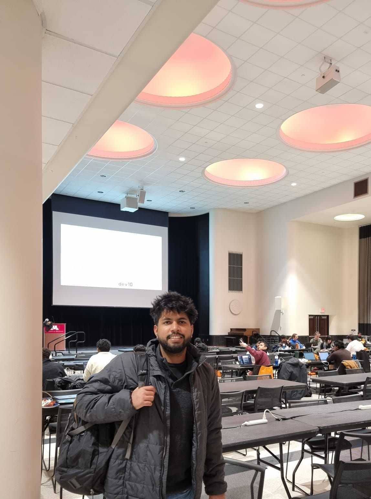

Robotics Researcher | MS Robotics @ UMN | Perception & VLM/VLA
Building autonomous systems with computer vision, deep learning, and vision-language models
I'm a robotics researcher pursuing my MS in Robotics at the University of Minnesota, working at the intersection of computer vision, deep learning, and autonomous systems. My research focuses on developing Vision-Language and Vision-Language-Action (VLM/VLA) models for autonomous decision-making and teleoperation.
Currently, I work as a Graduate Research Assistant at UMN's Networking, Mobile, and AI Research Lab under Prof. Zhi-Li Zhang, developing perception systems for autonomous vehicles including object detection, BEV pipelines, and multi-modal sensor fusion. I'm also investigating inverse problems in computer vision using generative models at the GLOVEX Lab with Prof. Ju Sun.
My work spans across autonomous driving, robotic manipulation, 3D reconstruction, and AI-driven perception systems. I've contributed to multiple research papers currently under review at IROS 2026 and CVPR Workshop 2026.

Vision-Language models for autonomous systems
Perception pipelines and ADAS systems
SLAM, point cloud fusion, semantic mapping
IROS 2026 (Under Review)
CVPR Workshop 2026 (Under Review)
ICLR (In Preparation)
Developing Vision-Language and Vision-Language-Action models for autonomous decision-making and human-on-demand teleoperation in robotic and driving systems. Research conducted at UMN's Network Lab under Prof. Zhi-Li Zhang.
Developed perception and driver-assistance modules for autonomous vehicles including object detection, lane detection, and collision warning systems using deep learning models. Deployed on MnCAV research vehicle.
Implemented multi-modal sensor fusion combining camera and LiDAR data for robust obstacle detection and scene understanding. Designed for autonomous vehicle perception in complex environments.
Built video prediction models to compensate for network latency in teleoperation systems, improving operator situational awareness during remote driving scenarios.
Designing reinforcement learning-based safety systems for intersection alerting to improve decision-making in multi-vehicle scenarios for autonomous driving applications.
Designed a 3D semantic reconstruction pipeline from RGB-D sequences integrating instance segmentation, PnP-based pose estimation, and point cloud fusion. Implemented point-to-point ICP from scratch.
Developed stereo SLAM pipeline for GPS-denied indoor navigation using PX4, Isaac ROS depth segmentation. Achieved sub-2ms inference latency with TensorRT optimization on custom stereo cameras.
Developed perception and navigation components for a mobile EV charging robot designed to autonomously locate and service parked vehicles using LiDAR and camera-based perception.
Integrated YOLOv8 with stereo camera system for object detection and pose estimation for robotic grasping. Optimized disparity map generation using TensorRT for real-time control loops.
I'm always open to new opportunities, collaborations, or just a chat about robotics and technology. Feel free to reach out!